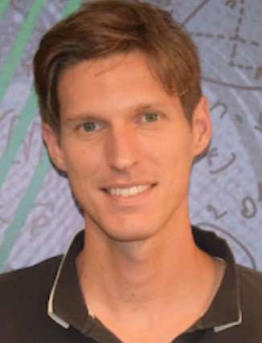
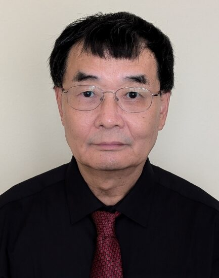
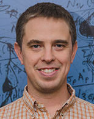
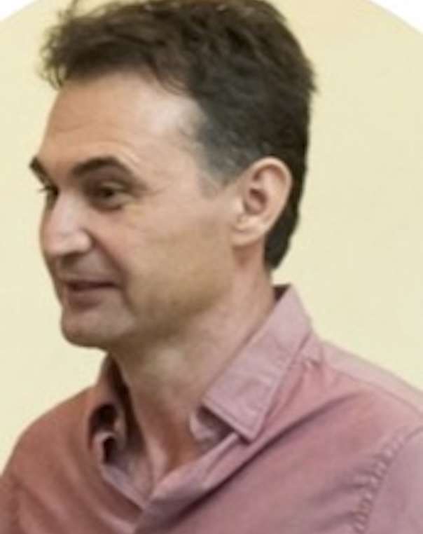
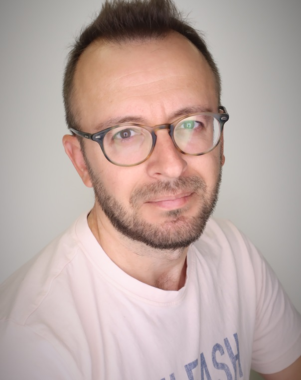
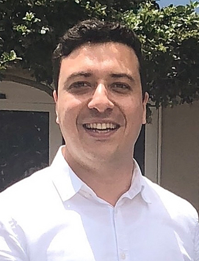
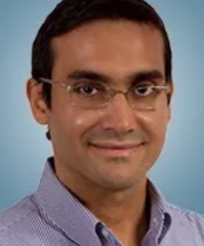
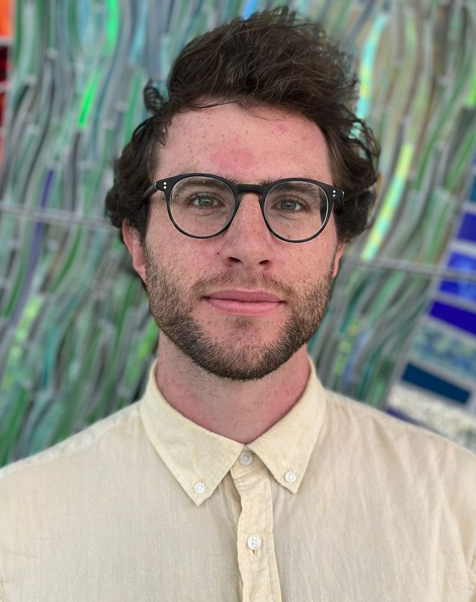
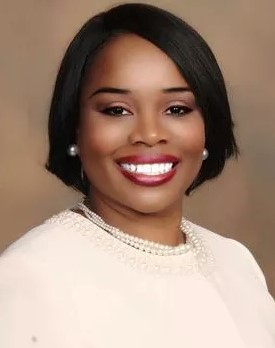
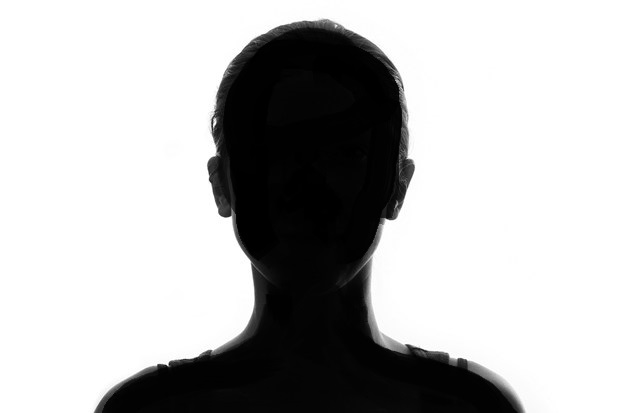

Jean-François Biasse
PI · Mathematics
Computational algebra, cryptography, and quantum computing.

The RTG brings together faculty mentors, postdoctoral scholars, graduate students, and external collaborators in a vertically integrated research community in applied algebra, cryptography, coding theory, and quantum computing.
Community structure
One of the strengths of the RTG is that it is not organized around a single cohort. Undergraduates, graduate students, postdoctoral scholars, faculty mentors, and outside collaborators all contribute to the same research ecosystem.
The core investigators leading the RTG in Applied Algebra at USF.

Computational algebra, cryptography, and quantum computing.

Algebraic geometry, coding theory, and cryptography.

Number theory, algebra, and coding theory.

Computational group theory and cryptography.

Quantum computing and mathematical physics.
Additional faculty contributing to the broader RTG research and mentoring environment.

Applied algebra and related mathematical directions connected to the RTG ecosystem.

Cryptographic engineering, hardware security, and implementation-focused cryptography.

Practical cryptography, secure systems, and applied cybersecurity.

Algebra, combinatorics, number theory, and coding-theory-adjacent research.

Mentoring, pedagogy, and professional development within the RTG structure.
Postdocs play a key role in research leadership, mentoring, and day-to-day intellectual life.

RTG postdoctoral scholar.
RTG postdoctoral scholar.
RTG postdoctoral scholar.
RTG postdoctoral scholar.

RTG postdoctoral scholar.
Graduate trainees form an essential layer of the RTG’s research and mentoring pipeline.
RTG graduate trainee.
RTG graduate trainee.
RTG graduate trainee.
RTG graduate trainee.
RTG graduate trainee.
RTG graduate trainee.
Collaborators and outside members who strengthen the RTG’s broader research network.
External collaborator connected to the RTG network.
External collaborator connected to the RTG network.